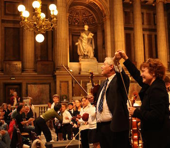

History
The Villa Sinfonia Foundation had its beginnings in 1975 when Lynn and Roy Oakley started the Oakley Violin Studio,a private violin studio. Since that time, the private studio has expanded to include other private studios in a 501 ©3 non-profit organization called the Villa Sinfonia Foundation. The Villa Sinfonia Foundation is dedicated to developing string musicians of all ages and abilities, through the performance of chamber music and chamber orchestra music, assisted and coached by professional musicians.
Villa Sinfonia Foundation has a Collective Bargaining Agreement with the Musicians Union Local No. 6, American Federation of Musicians, and is a member of ASCAP and BMI, and as such, ASCAP and BMI licenses cover all Villa Sinfonia Foundation sponsored performances.
Students in the Villa Sinfonia Foundation have performed throughout the San Francisco Bay Area including featured annual performances at Ghirardelli Square during the summer and at tree lighting ceremonies, Jack London Square, Crocker Plaza, Stonestown, Diamond Heights,The Shriners and the Veterans Administration Hospital, Sheraton Palace Hotel, The World Trade Club at San Francisco’s Ferry Building, and the San Francisco Marriott Hotel. The students were also featured in a Paramount Studio’s made-for-TV movie starring Elizabeth Montgomery.
In March, 1994 the Oakley Violin Studio was given a ‘Gold Award’ for its participation at the Pacific Basin Music Festival in Honolulu, Hawaii. In June 1996 the Villa Chamber Orchestra, the orchestra of the Villa Sinfonia Foundation, played concerts in Salzburg, Austria, Munich and Heidelberg, Germany as participants in Munichs Second International Festival of Music. In June 1999 the Villa Chamber Orchestra toured England and Ireland, where it participated as the ‘orchestra in residence’ for the 21st annual Shrewsbury International Music Festival in Shrewsbury, England. The Villa Chamber Orchestra performed in Carnegie Hall, May 28, 2002 on the Carnegie Hall ‘Debut Series’. The Orchestra also performed at Davies Symphony Hall in San Francisco on June 1, 2004. The Foundation toured Prague and Italy in June 2005, Scotland and England in 2008, Washington D.C in 2011 where the Villa Sinfonia and Villa Chamber orchestras performed at the Kennedy Center, France in 2014. In 2015, Villa Sinfonia returned to Carnegie Hall with a performance featuring Villa Sinfonia Orchestra, Villa Chamber Orchestra, Villa's Prepatory Division, and renowned piano soloist William Corbet Jones. This upcoming summer, Villa will be traviling to Vienna and Budapest to perform at the famous Esterházy Palace.
The Foundation’s yearly schedule provides a variety of performance opportunities for students of all ages and levels. Among these experiences are 3 chamber orchestra concerts, Suzuki group classes, master classes for advanced players, a family ensemble concert (featuring siblings, parents, and friends), as well as the opportunity for senior high school and college students to perform solos with the Villa Sinfonia Chamber Orchestra. The more advanced students are given the opportunity to play in the Villa Chamber Orchestra, a professional chamber orchestra with its own concert series. Every summer, The Villa Sinfonia Foundation also offers a two week chamber music camp at Zephyr Point at Lake Tahoe. Associated teachers in the Villa Sinfonia Foundation are professional musicians or professional-quality musicians, gifted in their ability to work with students of all ages and abilities.
Directors Lynn and Roy Oakley have an extensive musical background with graduate degrees from S. F. State University in music education and performance. They have taught in public and private schools, guest conducted at Cazadero Music Camp and taught at Suzuki Institutes. Their approaches to teaching and playing reflect their years of study with Russell Gerhart, David Schneider, Frank Houser, Daniel Kobialka, Andor Toth, Sascha Jacobinoff, and Artur Argeiwicz. Lynn and Roy are members of the Musicians Union, Local 6 and have performed for several years with San Francisco Bay Area musical groups including the Villa String Quartet, The Oakland East Bay Symphony (formerly the Oakland Symphony), Marin Symphony, San Francisco Symphony, the Lamplighters and numerous other groups. In March, 2001, Roy and Lynn Oakley received a Certificate of Honor from the Board of Supervisors for the City and County of San Francisco, honoring their 25 years of outstanding service to the community.
Roy and Lynn Oakley and the Villa Sinfonia Foundation were presented with the Governors Award at the San Francisco Chapter of the Recording Academys Grammy Awards, 43rd Grammy Nominee Celebration on Sunday, February 11, 2001.